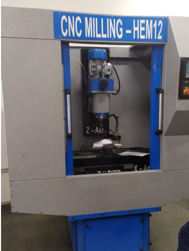
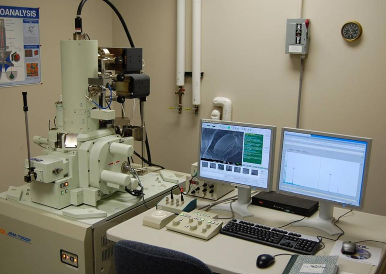
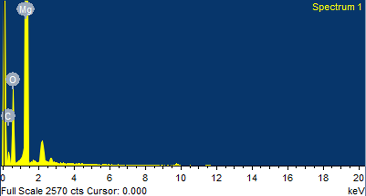

Project Overview
A CNT-reinforced magnesium composite was developed using a modified friction stir processing technique to improve CNT dispersion. XRF confirmed the presence of carbon, magnesium, and oxygen, while SEM showed a consistent distribution of CNTs across the sample. Mechanical properties, such as macro-hardness, were also investigated.

Experimental setup — FSP process
Results & Characterization
The Mg/CNT composites were produced by Friction Stir Processing. XRF was conducted for two samples, one having holes at a distance of 10 mm and the other one having 20 mm. The graphs obtained represent the presence of Carbon, Magnesium and Oxygen at their intensities and energy levels. Both samples produced the same graphs but the data about the weight percentages changed.
- XRF confirmed the presence of carbon, magnesium, and oxygen throughout the composite
- SEM imaging showed a consistent distribution of CNTs across the sample
- In Figure 25, a magnified image shows MWCNT implanted in Mg
- SEM imaging at the same magnification at different areas showing that the MWCNT is distributed throughout the sample uniformly
- Mechanical properties, such as macro-hardness, were also investigated

SEM imaging equipment

XRF graph showing elemental composition